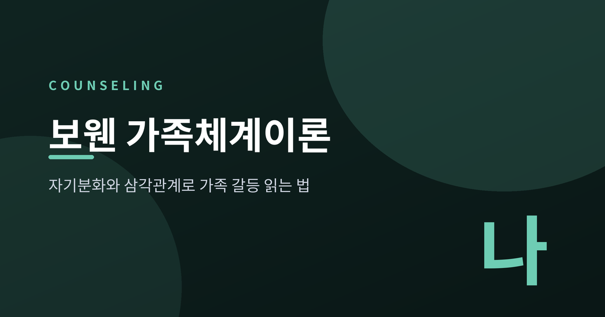
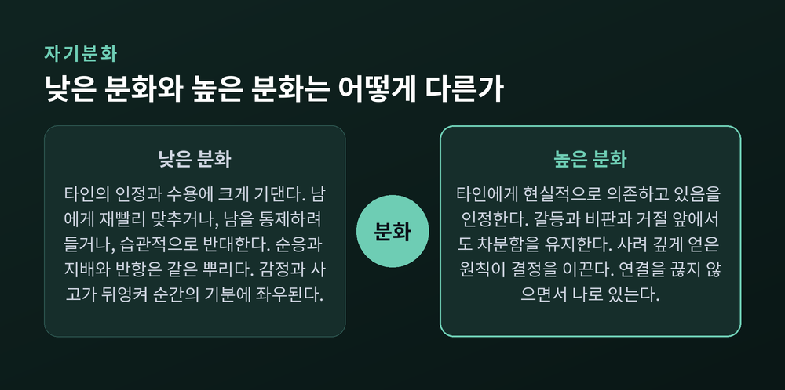
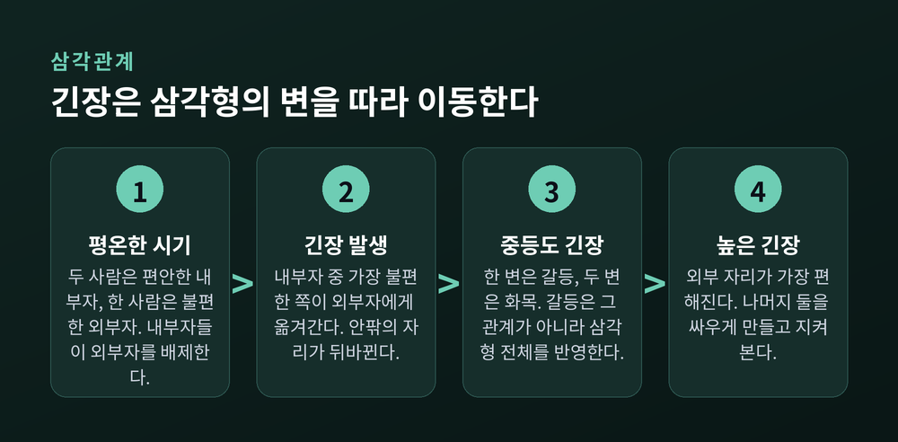
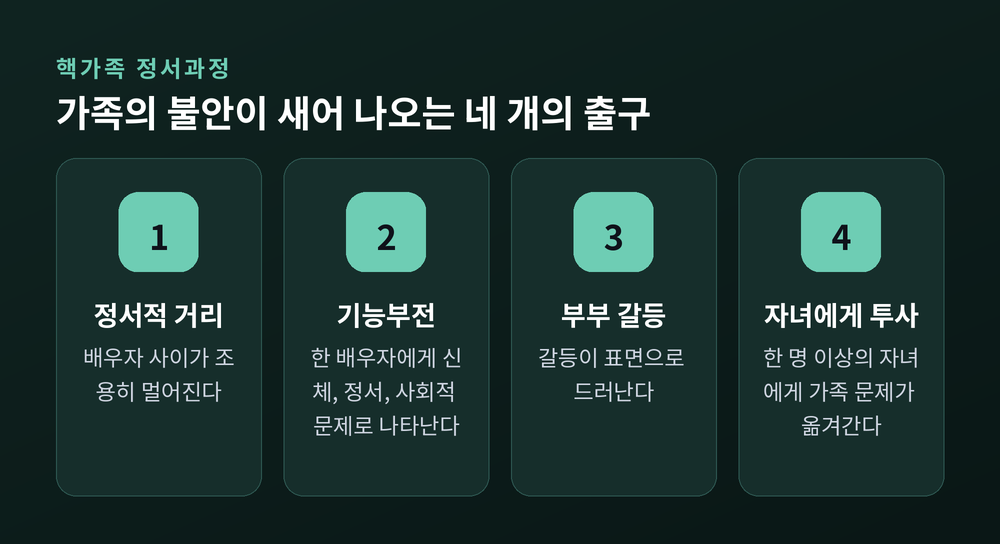
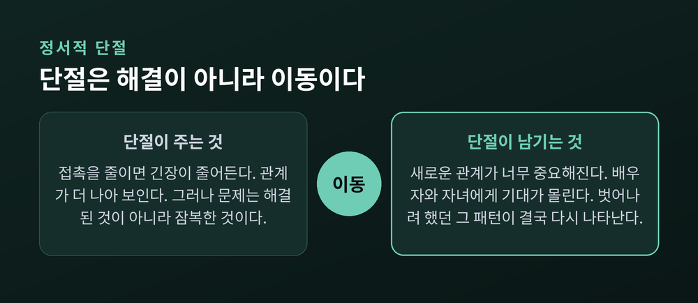
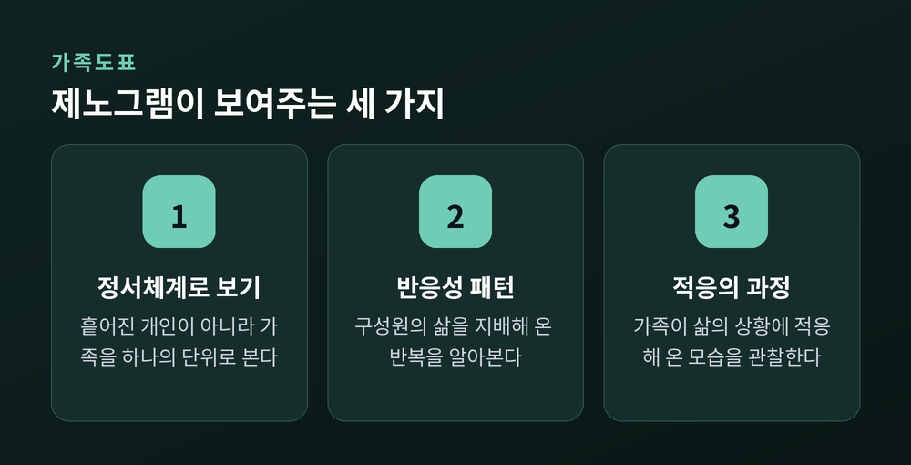
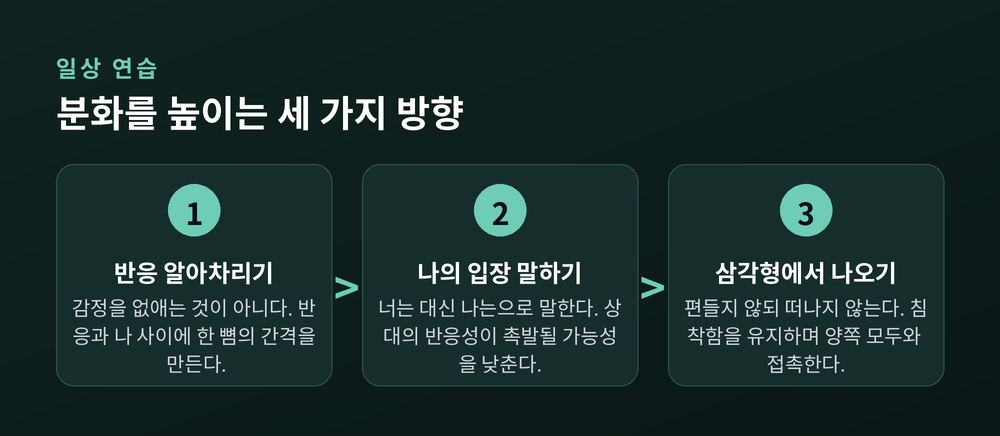

이번 글에서는 보웬 가족체계이론을 정리해 보겠습니다. 가족 갈등을 "누가 문제인가"가 아니라 "이 관계가 어떻게 움직이는가"로 바꿔 보는 관점입니다. 자기분화와 삼각관계라는 두 개념을 중심에 두고, 이론의 한계까지 함께 짚겠습니다.
보웬 가족체계이론은 가족을 하나의 정서 단위로 봅니다.
정신과 의사 머레이 보웬이 세운 이론입니다. 그는 진화의 산물로서의 인간에 대한 지식과 가족 연구의 결과를 시스템 사고로 통합했습니다.
보웬센터의 설명은 인상적입니다. 사람들은 종종 가족과 거리감을 느끼거나 단절되었다고 여기지만, 이는 사실이라기보다 느낌에 가깝다고 말합니다. 가족은 서로의 생각과 감정과 행동에 너무 깊이 영향을 미쳐서, 마치 구성원 모두가 "같은 정서적 피부 아래 살고 있는 것"처럼 보인다는 것입니다.
그래서 한 사람의 기능 변화는 예측 가능하게 다른 사람의 기능 변화로 이어집니다.
여기서 중요한 대목이 나옵니다. 가족이 불안해지면 그 불안은 전염되듯 번지며 증폭됩니다. 불안이 올라갈수록 가족의 연결은 위로가 아니라 스트레스가 됩니다. 결국 한 명 이상이 압도되거나 고립됩니다.
그런데 그 사람은 누구일까요.
보웬센터는 이렇게 답합니다. 타인의 긴장을 줄이기 위해 가장 많이 맞춰 준 사람입니다. 가장 많이 맞춰 주는 사람이 문자 그대로 체계의 불안을 "흡수"하며, 그 결과 우울이나 중독, 신체 질환 같은 문제에 가장 취약해집니다.
관점이 뒤집히는 지점입니다.
예전엔 증상을 가진 사람이 곧 병든 사람이었습니다. 지금은 다르게 봅니다 — 그는 체계의 불안이 가장 많이 모이는 자리에 서 있었던 사람입니다.
이 이론은 여덟 개의 개념이 서로 맞물린 구조로 되어 있습니다. 삼각관계, 자기분화, 핵가족 정서과정, 가족투사 과정, 다세대 전수 과정, 정서적 단절, 형제 순위, 사회적 정서과정입니다. 소개하는 자료마다 순서는 조금씩 다릅니다. 다만 "맞물려 있다"는 성격만큼은 공통됩니다.
가장 널리 알려진 개념이자, 가장 많이 오해받는 개념입니다.
자기분화를 흔히 "독립적인 사람", "감정에 휘둘리지 않는 사람", "가족에게 선을 긋는 사람"으로 이해합니다. 이론의 설명은 그와 상당히 다릅니다.
보웬센터에 따르면, 자기가 덜 발달한 사람일수록 타인이 그의 기능에 미치는 영향이 큽니다. 그리고 그 자신도 능동적으로든 수동적으로든 타인의 기능을 통제하려 듭니다.
분화가 낮은 사람은 타인의 수용과 인정에 지나치게 기댑니다. 그래서 둘 중 하나로 갑니다. 남을 기쁘게 하려고 자기 생각과 말과 행동을 재빨리 바꾸거나, 남이 어때야 하는지를 독단적으로 선포하며 순응을 강요합니다.
원문의 비유가 날카롭습니다. "불량배는 카멜레온만큼이나 인정과 수용에 의존한다." 다만 불량배는 남들이 자기에게 동의하도록 밀어붙일 뿐입니다. 의견이 갈리는 상황은 불량배에게도 카멜레온만큼이나 위협적입니다.
극단적으로 반항하는 사람 역시 분화가 낮습니다. 그저 타인의 입장에 습관적으로 반대함으로써 "자기"인 척할 뿐입니다.
순응도, 지배도, 반항도 같은 뿌리라는 뜻입니다.
그렇다면 분화가 높은 사람은 어떤 모습일까요. 원문은 그가 자신이 타인에게 현실적으로 의존하고 있음을 인정한다고 적습니다. 독립도 고립도 아닙니다.
그는 갈등과 비판과 거절 앞에서도 충분히 차분함을 유지합니다. 그래서 사실을 신중히 검토한 사고와 감정에 흐려진 사고를 구별할 수 있습니다. 사려 깊게 획득한 원칙이 결정을 안내하므로 순간의 감정에 덜 좌우됩니다. 결정한 것과 말하는 것과 행동하는 것이 서로 일치합니다.
추종자가 되지 않으면서 타인의 견해를 지지할 수 있고, 차이를 양극화시키지 않으면서 타인의 견해를 거부할 수 있습니다. 밀어붙이지 않으면서 자기를 규정하고, 굴복하라는 압력을 우유부단하지 않게 다룹니다.
정리하면 이렇습니다. 자기분화는 감정을 없애는 능력이 아니라 감정과 사고를 구별하는 능력입니다. 관계를 끊는 능력이 아니라 관계 안에 머물면서 나로 있는 능력입니다.

보웬은 자기분화에 0에서 100까지의 이론적 척도를 제시했습니다. 다만 여기에는 그가 직접 단 조건이 붙습니다. 분화가 낮은 사람은 가성자기의 기능 수준이 크게 요동치기 때문에 하루 단위나 주 단위 평가는 불가능하다는 것입니다. 수개월에서 수년에 걸친 정보라야 대략적인 추정이 가능합니다.
그러니 이 척도는 성적표가 아닙니다. 자기 점수를 매기려는 시도부터가 이론과 어긋납니다.
측정 도구로는 스코론과 프리들랜더가 1998년에 개발한 자기분화 척도(DSI)가 널리 쓰입니다. 원판은 43문항이며 네 개의 하위척도로 구성됩니다. 정서적 반응성, 나의 입장, 정서적 단절, 타인과의 융합입니다. 이 네 가지의 복합체가 곧 자기분화라는 구성입니다.
보웬 이론에서 삼각관계는 정서체계의 "분자"에 해당합니다. 가장 작은 안정적 관계 체계이기 때문입니다.
두 사람으로 이루어진 관계는 불안정합니다. 제3자를 끌어들이기 전까지 긴장을 거의 견디지 못합니다.
반면 삼각관계는 훨씬 많은 긴장을 담습니다. 이유는 단순합니다. 긴장이 세 개의 관계 사이를 옮겨 다닐 수 있기 때문입니다.
그리고 이 지점에서 이론의 가장 서늘한 문장이 나옵니다.
"긴장을 퍼뜨리면 체계는 안정될 수 있다. 그러나 아무것도 해결되지 않는다."
삼각관계는 반드시 소외된 한 사람을 만듭니다. 견디기 어려운 자리입니다. 소외되는 것, 혹은 소외될 것을 예상하는 데서 생기는 불안이 삼각관계를 굴리는 동력입니다.
긴장 수준에 따라 패턴이 바뀝니다.

평온할 때는 두 사람이 편안한 내부자가 되고 한 사람이 불편한 외부자가 됩니다. 내부자들은 능동적으로 외부자를 배제합니다. 외부자는 거절감을 느끼며 둘 중 하나와 가까워지려 애씁니다. 삼각관계 안에서는 언제나 누군가 불편하고, 언제나 누군가 변화를 밀어붙이고 있습니다.
내부자 사이에 긴장이 생기면 가장 불편한 쪽이 외부자에게로 옮겨 갑니다. 자리가 바뀝니다. 원래 내부자 하나가 새 외부자가 되고, 원래 외부자가 내부자가 됩니다.
중등도 긴장에서는 대개 한 변은 갈등, 두 변은 화목한 상태가 됩니다. 여기서 이론의 핵심 명제가 나옵니다. 갈등은 그 갈등이 존재하는 관계에 내재한 것이 아니라, 삼각형 전체의 기능을 반영한다는 것입니다.
긴장이 아주 높아지면 외부 자리가 오히려 가장 바람직해집니다. 내부자 하나가 현재의 외부자를 다른 내부자와 싸우게 만들어 바깥으로 빠져나갑니다. 성공하면 그는 나머지 둘이 싸우는 것을 지켜보는 편한 자리를 얻습니다.
가장 흔한 삼각관계는 부부와 자녀로 이루어집니다. 일반화된 가상의 상황으로 그려 보겠습니다.
결혼 초기에는 갈등이 거의 없습니다. 스트레스가 낮기 때문입니다. 보웬센터는 이 점을 짚습니다. 가족의 적응 능력의 한계를 드러내려면 스트레스가 필요하다고 말입니다.
아이가 태어나고 압력이 올라갑니다. 아내는 압도감을 느끼고 남편에게 지지를 구합니다. 남편은 겉으로는 인내심 있게 응하지만, 속으로는 아내를 "문제를 가진 사람"으로 보기 시작합니다. 귀가는 점점 늦어집니다.
아내는 아이에게로 초점을 옮깁니다. 자기가 자라며 겪은 불안을 아이만은 겪지 않게 하겠다는 마음입니다. 이유는 의외로 단순합니다. 남편과 이야기하는 것보다 아이에게 초점을 맞추는 것이 더 쉽기 때문입니다.
부부는 함께 있는 시간을 결혼 이야기가 아니라 아이 이야기로 채웁니다.
삼각관계가 완성된 순간입니다. 남편은 외부 자리, 아내와 아이는 내부 자리에 섭니다. 부부 사이의 거리가 아내의 아이에 대한 과잉관여와 남편의 일에 대한 과잉몰두로 균형을 맞춥니다.
이제 갈등은 사라지지 않고 회전합니다.
아내와 아이 사이에 긴장이 쌓이면 남편이 아내 편을 들며 "아이가 문제"라고 동의합니다. 갈등의 변이 아내-아이에서 남편-아이로 옮겨 갑니다. 남편과 아이의 갈등이 격해지면 아내가 아이 편을 듭니다. 그러면 갈등은 부부 사이로 되돌아오고, 아이가 편한 외부 자리를 얻습니다.
삼각형의 세 변을 따라 같은 긴장이 돌고 있을 뿐입니다.
이 과정이 반복되면 가족의 불안은 네 개의 출구 중 하나로 새어 나옵니다. 핵가족 정서과정이라 부르는 개념입니다.

과정의 강도를 좌우하는 것은 세 가지입니다. 미분화의 정도, 원가족과의 정서적 단절의 정도, 그리고 체계에 걸린 스트레스의 정도입니다.
가족이 힘들면 사람들은 흔히 거리를 둡니다. 그것이 답처럼 보이기 때문입니다.
보웬 이론은 이를 정서적 단절이라 부릅니다. 부모나 형제와의 미해결된 정서적 문제를, 접촉을 줄이거나 끊음으로써 관리하는 방식입니다.
형태는 두 가지입니다. 멀리 이사해 거의 집에 가지 않거나, 물리적으로는 접촉하되 민감한 주제를 회피하거나.
효과는 있습니다. 관계가 "더 나아" 보입니다.
그러나 원문은 냉정합니다. 문제는 해결된 것이 아니라 잠복한 것입니다.

단절의 진짜 대가는 다른 데서 청구됩니다. 보웬센터의 설명이 그렇습니다. 사람들이 단절로 가족의 긴장을 줄이면, 그 대신 새로운 관계를 너무 중요하게 만들 위험을 떠안습니다.
원가족에서 많이 단절할수록, 그 사람은 배우자와 자녀와 친구가 자기 욕구를 채워 주기를 더 많이 기대합니다. 그래서 그들에게 특정한 방식이 되라고 압박하거나, 관계가 깨질까 두려워 그들의 기대에 자기를 맞춥니다.
새 관계는 대체로 처음엔 순조롭습니다. 그러나 벗어나려 했던 바로 그 패턴이 결국 다시 나타납니다.
집에 가면 이번엔 다를 거라 기대합니다. 원문은 옛 상호작용이 대개 몇 시간 안에 다시 떠오른다고 적습니다. 강한 저류를 품은 표면적 화목이거나, 고함으로 번지거나. 짧은 방문 뒤에도 양쪽 모두 탈진합니다.
여기서 원문의 한 문장이 오래 남습니다. "사람들은 이렇게 되기를 원하지 않는다. 그러나 모든 당사자의 민감성이 편안한 접촉을 가로막는다."
누구의 악의도 아니라는 뜻입니다.
보웬은 단절이 근저의 정서적 강렬함을 해소하지 못하며, 단지 그것을 재배치할 뿐이라고 보았습니다. 단절은 불안을 없애는 것이 아니라, 불안의 청구서를 다음 관계로 넘기는 일입니다.
보웬은 자신의 연구와 임상과 훈련에서 가족도표를 사용했습니다. 흔히 제노그램, 가계도라 부르는 그것입니다.
용어를 한 번 짚고 가겠습니다. 보웬센터의 공식 명칭은 가족도표이며, 제노그램은 이후 널리 보급된 이름입니다. 실무에서는 혼용됩니다.
가족도표는 여러 세대에 걸친 기능의 사실들을 그림으로 옮긴 것입니다. 감상이 아니라 사실입니다. 누가 언제 태어나고, 누가 언제 떠나고, 누가 누구와 말을 끊었는지.

보통 3세대를 그립니다. 단절은 관계선을 가로지르는 두 개의 짧은 평행 사선으로 표시합니다.
그림으로 옮기면 보이는 것이 있습니다. 한 세대에서 끊어진 자리가 다음 세대에서 어떻게 반복되는지 같은 것 말입니다.
다만 여기서 조심할 대목이 있습니다. 뒤에서 다시 말씀드리겠습니다만, 다세대 전수는 이 이론에서 실증 근거가 가장 약한 축에 속합니다. 가족도표는 가설을 세우는 도구이지, 운명을 확정하는 도구가 아닙니다.
먼저 솔직히 말씀드릴 것이 있습니다. 보웬센터는 한번 형성된 자기의 수준이 구조화된 장기적 노력 없이는 좀처럼 바뀌지 않는다고 못 박습니다.
그러니 몇 가지 요령으로 금방 오르는 것이 아닙니다. 아래는 방향이지 지름길이 아닙니다.

첫째, 반응하는 대신 반응을 알아차립니다.
분화의 출발점은 감정을 없애는 것이 아닙니다. 감정과 사고를 구별하는 것입니다. 명치가 조여드는 순간, 그 조여듦 자체를 관찰 대상으로 삼아 보시길 권합니다. 반응을 없앨 수는 없어도 반응과 나 사이에 한 뼘의 간격은 만들 수 있습니다.
둘째, 나의 입장으로 말합니다.
"너는 내 말을 절대 듣지 않아" 대신 "나는 네가 내 말을 듣는다고 느껴지지 않아"로 바꾸는 것입니다. 단순한 화법 교정처럼 보입니다만, 이론적 함의는 큽니다. 이 방식은 상대의 반응성이 촉발될 가능성을 낮춥니다.
자기분화 척도에서도 "나의 입장"은 네 하위척도 중 하나입니다. 압력에 직면해서도 개인적 신념과 가치를 고수하는 능력을 뜻합니다. 화법이자 능력인 셈입니다.
셋째, 삼각형에서 빠져나옵니다.
탈삼각화는 보웬 치료에서 가장 중요한 기법으로 꼽히기도 합니다. 근거가 되는 명제는 이렇습니다. 삼각관계의 한 구성원이 침착함을 유지하면서 나머지 둘과 정서적 접촉을 유지하면, 체계가 자동으로 진정된다는 것입니다.
편들지 않되 떠나지도 않는 것. 어머니의 하소연을 들으면서 아버지를 함께 비난하지 않는 것. 그러면서도 두 사람 모두와 연락을 끊지 않는 것.
말은 쉽고 실천은 어렵습니다. 다만 방향은 분명합니다. 남을 바꾸는 것이 아니라, 내가 그 자리에 어떻게 서 있을지를 정하는 일입니다.
보웬 이론은 설명력이 좋습니다. 좋기 때문에 위험하기도 합니다. 모든 것을 설명하는 틀은 반증하기 어렵습니다.
근거의 무게는 개념마다 다릅니다. 이 온도차를 아는 것이 이론을 제대로 쓰는 길이라고 생각합니다.
| 개념 | 실증 근거 상태 |
|---|---|
| 자기분화와 심리적 건강 | 충분한 지지 |
| 자기분화와 결혼의 질 | 충분한 지지 |
| 자기분화와 만성불안, 심리적 고통 | 지지됨 |
| 분화 수준의 시간적 안정성 | 연구 1편뿐, 결과 혼재 |
| 다세대 전수 | 불충분 (2편 확인, 2편 미확인) |
| 형제 순위 | 실증적 지지 거의 없음 |
| 삼각화의 구체 이론 | 실증적 지지 거의 없음 |
| 비슷한 분화 수준끼리 결혼 | 지지되지 않음 |
2020년까지의 연구 295편을 모아 검토한 자료를 보면, 자기분화가 심리적 건강과 결혼의 질을 예측한다는 데는 충분한 지지가 있습니다. 신체 건강 및 세대 간 관계와의 정적 관계도 확인됩니다.
그러나 같은 검토가 이렇게도 말합니다. 분화 수준이 시간에 걸쳐 안정적이라는 가설을 검증하려 한 연구는 단 1편이며, 그마저 결과가 혼재했습니다. 분화의 세대 간 전수는 충분히 연구되지 않았고, 2편은 확인했으나 2편은 지지 증거를 보이지 않았습니다.
2004년에 발표된 기초 연구 검토는 더 직접적입니다. 형제 순위와 삼각화에 관한 보웬의 구체적 이론은 실증적 지지를 거의 받지 못했습니다. 비슷한 분화 수준의 사람끼리 결혼한다는 가정도 지지되지 않았습니다.
즉 자기분화라는 핵심 구인은 상당히 버티고 있지만, 다세대 전수와 형제 순위 같은 가지들은 근거가 약합니다.
문화적 편향도 짚어야 합니다.
한국 독자에게는 이 대목이 특히 중요합니다. 보웬 이론은 집단주의 문화에서 상호의존이 갖는 중심적 의미를 충분히 고려하지 않았다는 비판을 받아 왔습니다.
한국인과 유럽계 미국인을 비교한 연구가 있습니다. 자기분화의 모든 구성요소 수준이 미국인 쪽에서 더 높게 나타났습니다. 자기분화와 심리적 안녕감의 연관도 미국 표본에서 더 강했습니다.
가장 눈에 띄는 결과는 이것입니다. 한국 참여자들은 "타인과의 융합"을 자기가 속한 집단에 대한 충실함이나 조화를 이루는 것으로 인식했습니다. 한국에서는 그것이 바람직한 결과에 해당한다는 뜻입니다.
이론에서 병리의 지표인 것이, 문화에서는 미덕입니다.
미국 기준의 척도를 그대로 한국 가족에 들이대면 정상적인 문화 규범을 병리로 오독할 수 있습니다. 이론은 렌즈이지 자입니다.
젠더 편향에 대한 비판도 오래되었습니다.
페미니스트 학자들은 가족치료 이론에 숨은 젠더 편향을 지적해 왔습니다. 남성과 여성의 역할에 관한 가부장적 가정이 인정되거나 비판되지 않은 채 남아 있다는 것입니다. 그 결과 여성이 사회적으로 규정된 역할 때문에 병리화될 위험에 놓입니다. 여성은 쉽게 "과잉염려"로 이름 붙여지고, 가족 안에서의 능동적이고 관계적인 역할이 너무 쉽게 "융합"이나 "미분화"로 규정됩니다.
특히 무거운 지적이 하나 있습니다. 체계론적 관점이 치료자로 하여금 폭력 행동에 대해 중립적 입장을 취하게 만들어, 마치 각 개인이 폭력에 동등하게 책임이 있다는 함의를 낳는다는 비판입니다.
이 점은 분명히 해야 합니다. "모두가 체계의 일부"라는 말이 가해 책임을 나누는 근거가 될 수는 없습니다. 폭력이 있는 상황에서 우선하는 것은 이론이 아니라 안전입니다.
그 밖에도 가족이 끊임없이 변한다는 점에 대한 인식이 제한적이라는 것, 개인 관점과 체계 관점을 이분법으로 나눈다는 것, 사회적 불평등과 문화적 다양성을 다루기 어렵다는 것 등이 비판으로 제기되어 왔습니다.
여기까지 읽으시며 짐작 가는 장면이 있으셨을지 모르겠습니다.
다만 한 가지는 분명히 말씀드리겠습니다. 이 글은 일반적인 정보 제공을 위한 것이며, 진단이나 치료를 대신하지 않습니다. 본문의 사례도 이론을 설명하기 위한 일반화된 가상의 상황일 뿐, 특정 개인의 이야기가 아닙니다.
갈등이 반복되거나 일상에 지장이 있다면, 혼자 분석하는 것으로는 부족합니다. 가족상담 전문가나 전문 상담기관의 도움을 받으시길 권합니다. 삼각관계 안에 있는 사람은 자기가 삼각관계 안에 있다는 사실을 가장 늦게 알아차립니다. 바깥에서 함께 봐 줄 사람이 필요한 이유입니다.
특히 폭력이나 안전 문제가 있다면, 체계를 이해하는 일보다 안전을 확보하는 일이 먼저입니다.
끝으로 한 마디만 더 드리겠습니다.
보웬 이론이 남긴 가장 실용적인 통찰은 의외로 소박합니다. 가족 안에서 내가 바꿀 수 있는 것은 상대의 반응이 아니라 내 자리라는 것입니다.
긴장을 퍼뜨리면 체계는 조용해집니다. 그러나 아무것도 해결되지 않습니다.
그러니 분화란 결국 이런 것입니다 — 연결을 끊지 않으면서, 그 안에서 나로 있는 일.
가족을 이해하면 갈등이 사라지느냐고 물으신다면, 그렇지는 않다고 답하겠습니다. 다만 같은 자리에서 같은 방식으로 무너지는 일은 조금 줄어들 것입니다.